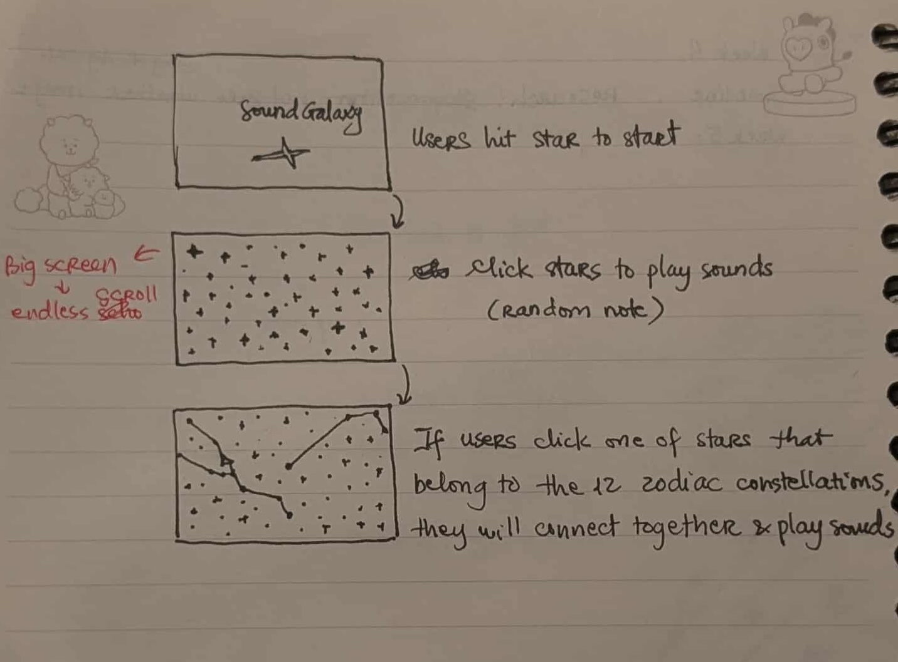
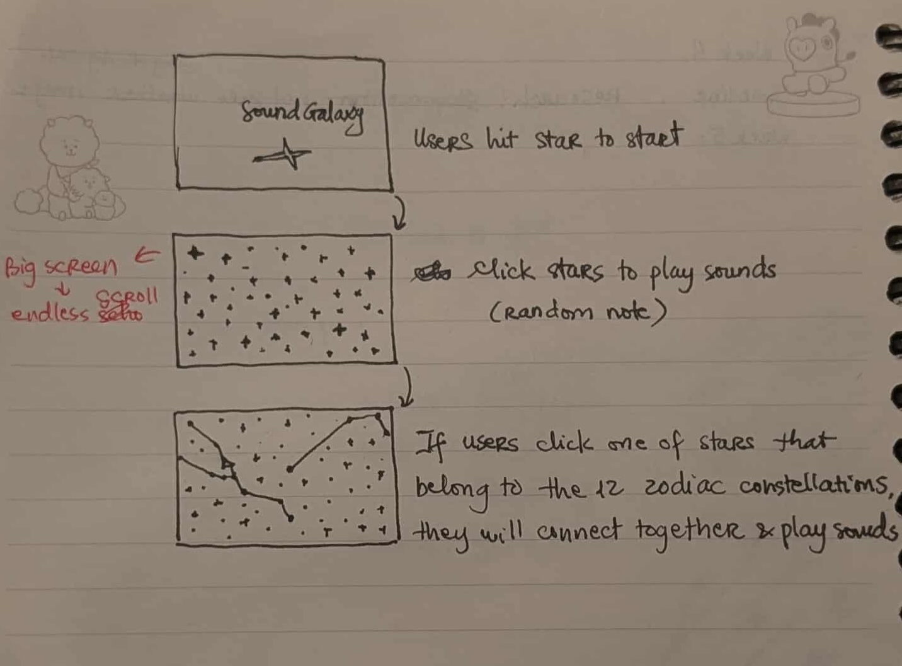
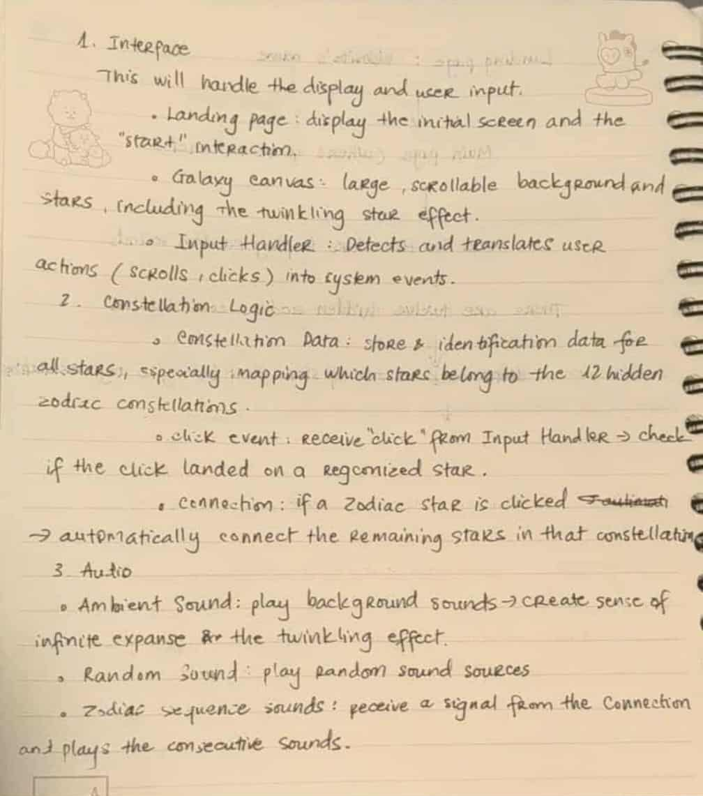
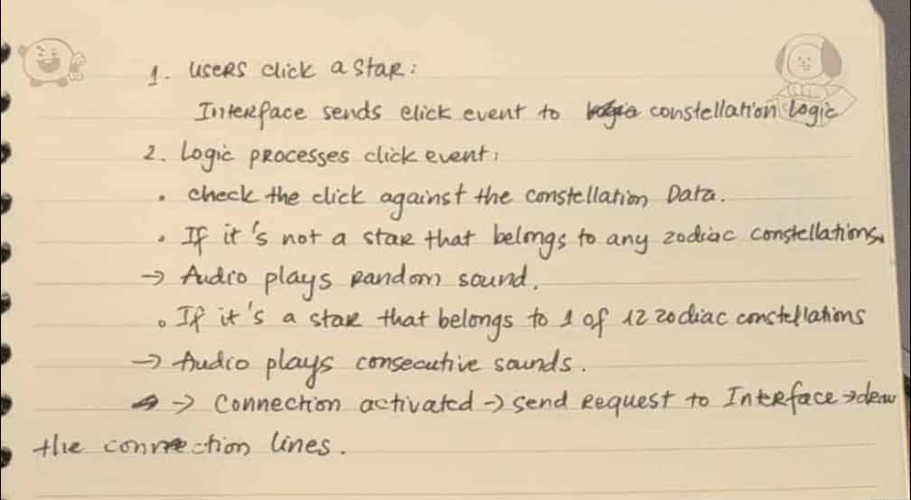

Conceptual Response
Sound Galaxy is an interface that allows users to explore the galaxy
and the constellations of the 12 zodiac signs, combined with sounds.
Each planet serves as a different sound source. The interface is
designed with a large, scrollable background to create a feeling of
infinite expanse. Hidden within the galaxy are the 12 zodiac
constellations. When a user clicks on a star belonging to a specific
constellation, the stars will automatically connect to form the
constellation and play sounds. Additionally, background effects such
as twinkling stars are created to make the experience more vivid.
Prompt: Spatial control
I want to create a space where sound is positioned within a 2D
environment, allowing users to move around and hear changes as the
planets emit sound.
Technique: Random (Math.random())
I use random values to
introduce unpredictability into the experience, for example: The
position and brightness of the stars are generated randomly, so the
galaxy background is always different each time it loads. The
twinkling effect of the stars changes randomly, creating a natural
feeling. The sound can vary slightly (pitch, filter, delay) based on
random values, so users don’t hear the same repetitive sound.
Visual Plan
Below is the user flow and wireframe
 

Technical Approach
Galaxy visuals: Stars are generated randomly using Math.random() for positions, brightness, and twinkling, making the background different on each load.
Spatial audio: The sound changes every time users click on the star.
System Map
 Reflection on Peer Testing — Week 8
Peer Testing Prompts:
- “Is it clear what the project is about when you first land on the galaxy page?”
- “Are the interactive elements (stars, planets) easy to notice and use?”
- “Do the visual effects (glow, twinkling stars) match the theme of ‘Sound Galaxy’?”
- “Does the sound change appropriately when interacting with stars or moving around?”
- “Would it be helpful to provide instructions before users start interacting, or should users explore freely?”
The results showed that the project clearly conveyed the idea of a galactic space where users could interact with the stars and experience the sounds. Most users easily recognized the theme from the visual context alone — the black background and glowing stars created a sense of space and made them understand that this was an exploratory experience. However, some did not immediately detect the constellation feature, which suggests that the project needed more cues to avoid missing important details. On the interaction side, many found it difficult to click on the stars because the interaction area was too small. This made the experience not really smooth. Suggestions for improvement included enlarging the hitbox, allowing for hover activation, or adding immediate feedback effects (such as brighter light effects or drawing a line when the user selects multiple stars). Feedback on the visuals was generally positive. Users said that the glow and flashing effects of the stars created an atmosphere that fit the “Sound Galaxy” theme. However, many comments also encouraged expanding the environment by adding planets, black holes, or richer motion effects to make the galaxy more vivid and diverse. The sound was considered suitable, with a characteristic “space-like” quality and adding depth to the experience. However, some users reflected that the sound sometimes did not play correctly or sounded a bit repetitive. This suggested that the project needed to add random variations in pitch, filter, or delay, to create uncertainty and make each interaction bring a new experience. Finally, on the question of whether to guide or let users explore on their own, most feedback suggested that users should be left to experience freely, as this fits the open and exploratory nature of the project. However, many also emphasized the need for a small hint or optional “help” button, so that first-time users do not miss important features such as constellation creation. In summary, feedback from week 8 has shown that the project is on the right track conceptually and aesthetically, but needs some fine-tuning in terms of interactions and tutorials. I plan to expand the star click area, add clearer visual feedback, improve the variety of sounds, and add optional tutorials. These changes should make the experience more intuitive, fun, and immersive, while still maintaining the spirit of free exploration I was aiming for in “Sound Galaxy.”